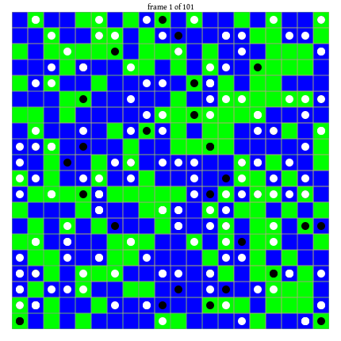
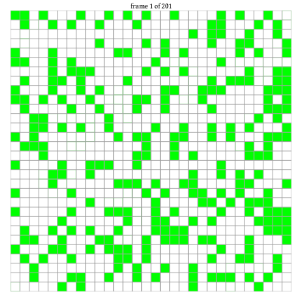

EasyABM.jl
A lightweight and easy to use framework for agent-based modelling.
Package Features
- Intuitive function based approach for all ABM modelling tasks.
- Support for Heterogeneous agents, where each agent can record its own properties.
- Grid blocks, called patches, in 2d and 3d models can be assigned properties like agents.
- Nodes and edges in a graph based model can also be assigned properties like agents.
- Underlying Graph in a graph model can be chosen to be fully dynamic in which edges and nodes can be added or removed during model run.
- Easy to create and save animation.
- Live interactive panel can also be easily created in Jupyter in a few lines of code.
 | |
|  |  |